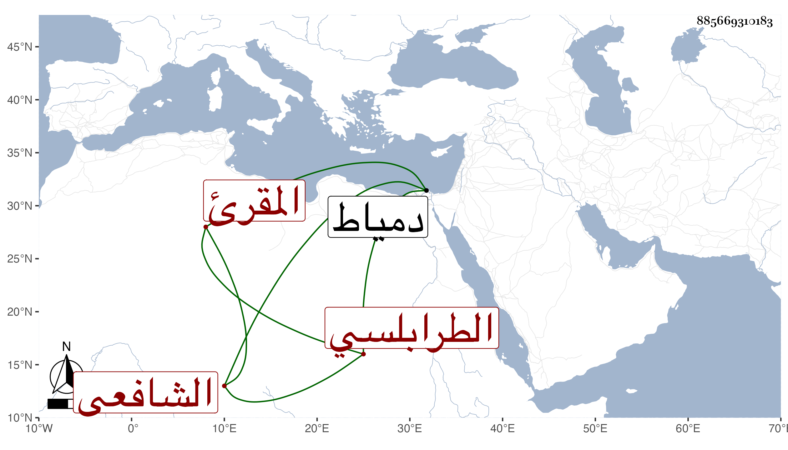

0902Sakhawi.DawLamic.ITO20230111-ara1.EIS1600.885669310183
Biography ID: 885669310183
399
محمد الشمس أبو عبد الله الطرابلسي الشافعي المقرئ ويعرف بالبخاري قدم دمياط واشتهر بعلو الرتبة في العلم والإقراء فتلا عليه الشرف موسى بن عبد الله البهوتي والتقي بن وكيل السلطان ووصفه بالشيخ الإمام العالم العلامة المقرئ المحقق .
